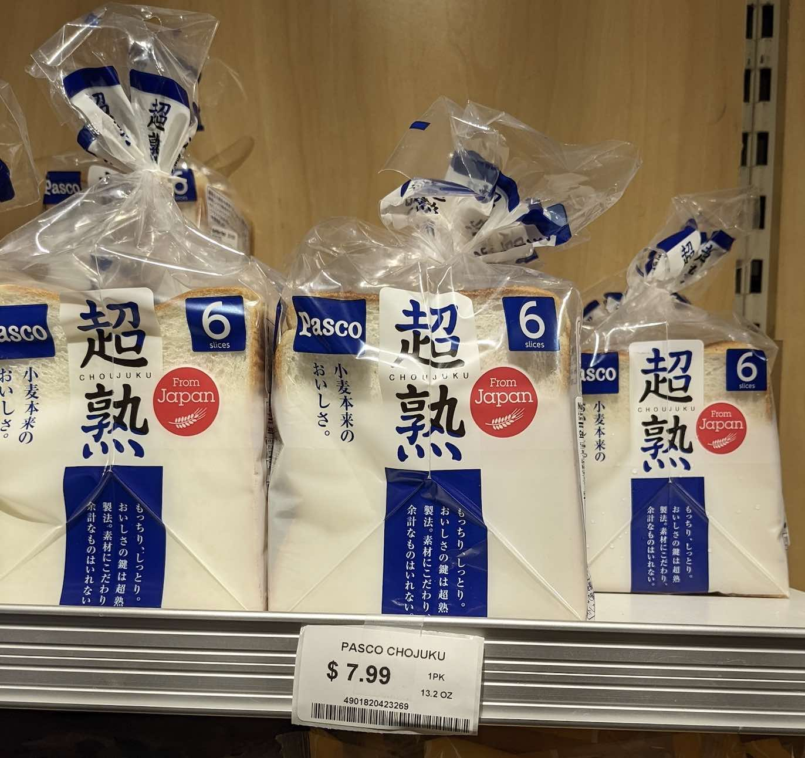
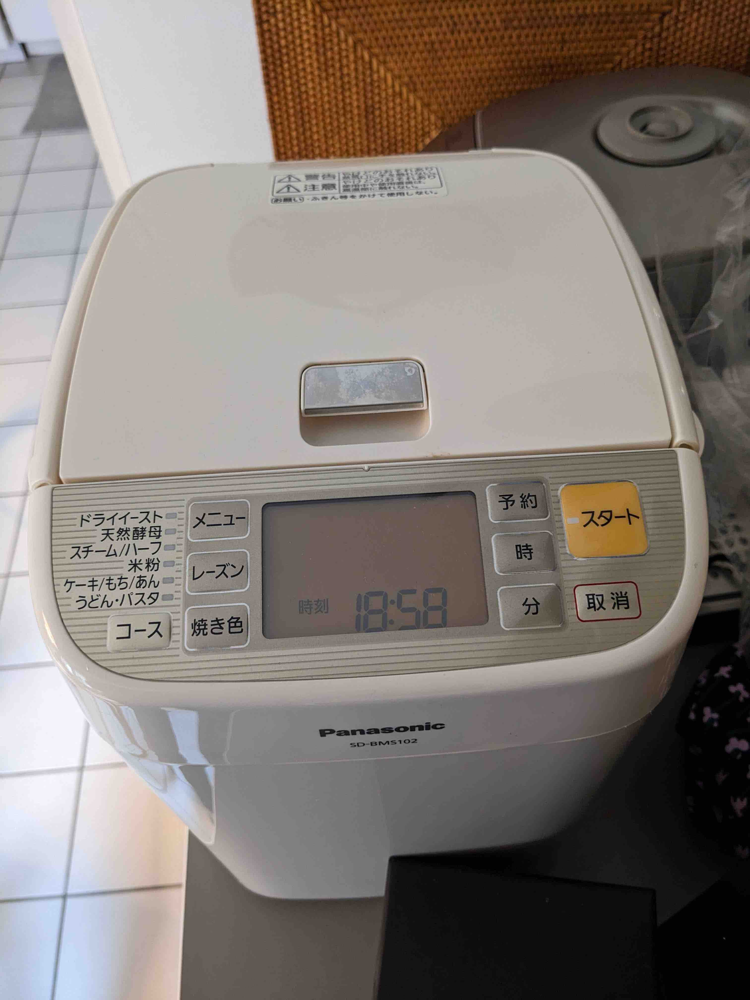
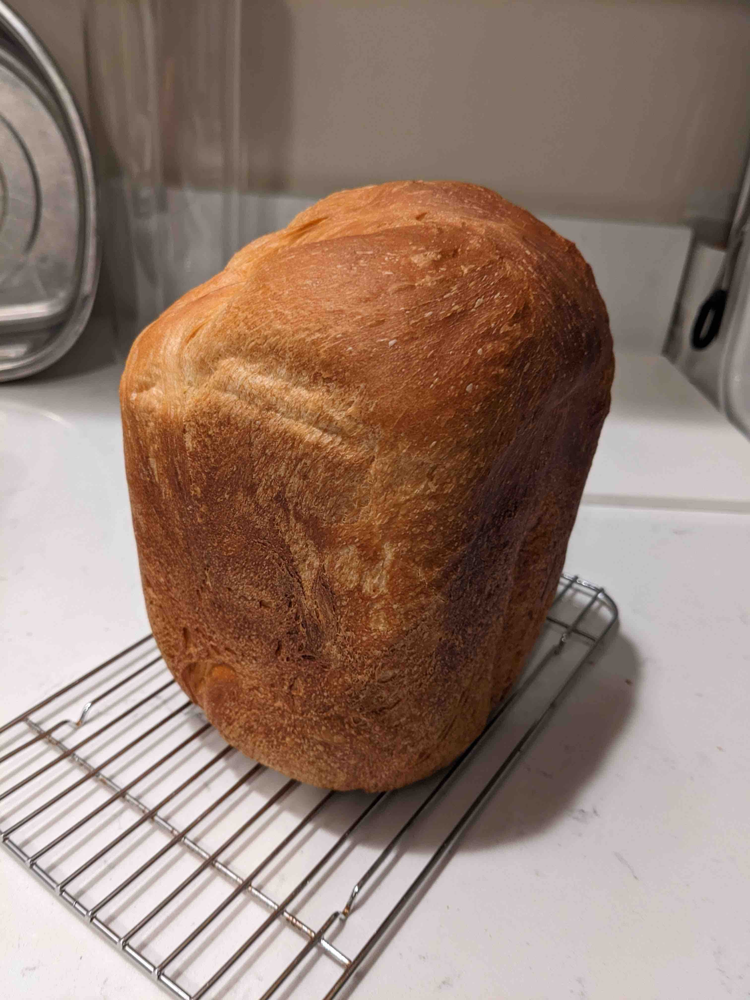
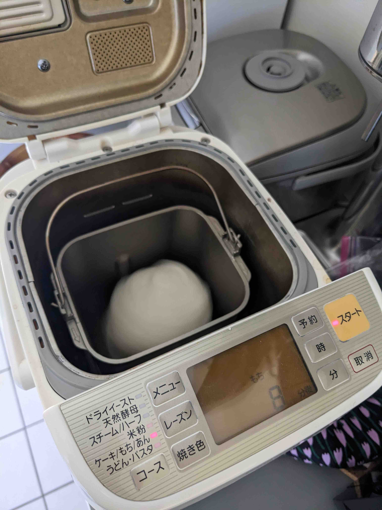

Table of Contents
1. はじめに
アメリカのスーパーで普通に売っているパンは、小さくて薄くて味もいまいちです。日本の食パンはふわふわでしっとりしていて美味しかったなぁ。近場の日系スーパーにパスコの「超熟」が売っていることがあるのですが、空輸のために$7.99もします。先日これを2つも買っている人がいて、思わず2度見してしまいました。

そんなアメリカでも、ホームベーカリーで自分でパンを焼いてしまえば、超熟よりも美味しいパンが、しかも安価に食べられるのです。我が家では最近、ホームベーカリーを本格的に使い始めました。
2. ホームベーカリー
使っているホームベーカリーは10年以上前に日本で買っていたもので、アメリカに引っ越し荷物として持ってきたものの、全く使わずにずっとクロゼットに放置していたものです。プラスチックがやや黄色くなってきましたが、まだ比較的新しい状態です。去年の秋くらいから再び使い始めました。

2.1. パンを作る
焼き立てパンはすごく美味しいです。我が家では毎週土曜朝に焼き上がりパンを食べるようにしています。カットする前にしばらく冷まさないといけませんが、そのために30分早起きする価値は十分にあります。パン用の簡易スライサーも日本から取り寄せました。

2.1.1. レシピ
いろいろなレシピがネット上に公開されていますが、現在のところ気に入っているレシピです。
- all purpose wheat(薄力粉〜中力粉?) 250g
- バター 15g
- 砂糖 15g
- 塩 4g
- 牛乳 200ml
- お好みでドライフルーツやナッツ追加。おすすめはドライいちじくとくるみ。
- ドライイースト 3g
2.2. 餅を作る
餅もかんたんにつくれます。水洗いしたもち米をセットすると餅になります。 昔のホームベーカリーでは炊飯器で炊いたものを投入したようですが、そのような手間はなくなりました。 
やはり、つきたての餅は美味しいです。主に磯辺巻きやきなこをつけて食べています。 2合だと出来上がりが少なく見えますが、3人で食べて丁度よいくらいです。うちは若干少食気味です。
2.3. うどんをこねる
先日初挑戦したのがこれ。小麦に塩水を入れたものを混ぜてくれます。これくらいならホームベーカリーを使わなくてもできる気もしなくはありませんが、均等に混ぜるのが大変なのでしょうか。
タネができたら大きめのジップロックに入れて踏みます。初回は踏み方が足りなくて麺のコシが足りませんでした。次回は踏み40回を3セットくらいと、多めにしてみます。
あまり期待はしていませんでしたが、思ったよりも上手にできました。麺の太さや長さはバラバラですが、あまり気になりませんでした。乾麺のうどんよりはずっと美味しく、冷凍讃岐うどんには及ばないくらいでした。コシが強くなれば冷凍讃岐うどんに並ぶ出来になるかもしれません。使うのが小麦(と塩)だけなのでコスパも最高です。
3. 終わりに
単調で残念なものになりがちなアメリカの食生活ですが、パンを焼いたりうどんを打ったり(牛タンを自分でさばく)などの工夫をすることで、だいぶ満足度が上がることに気が付きました。ホームベーカリーおすすめです。